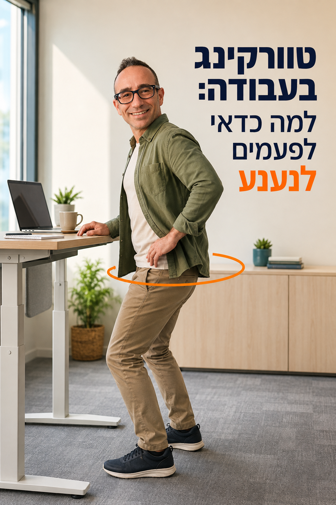
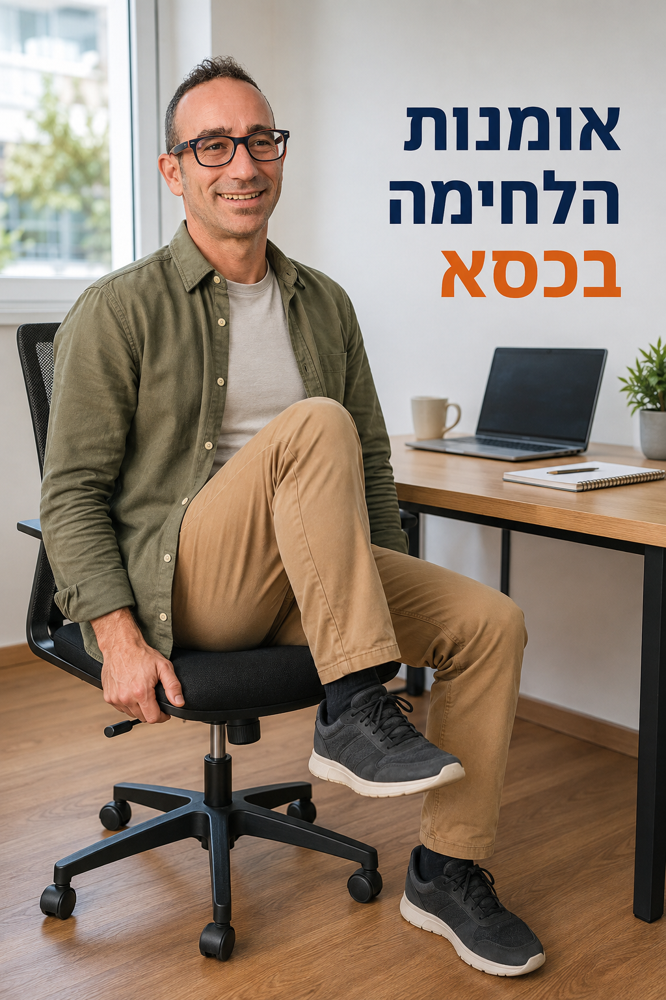
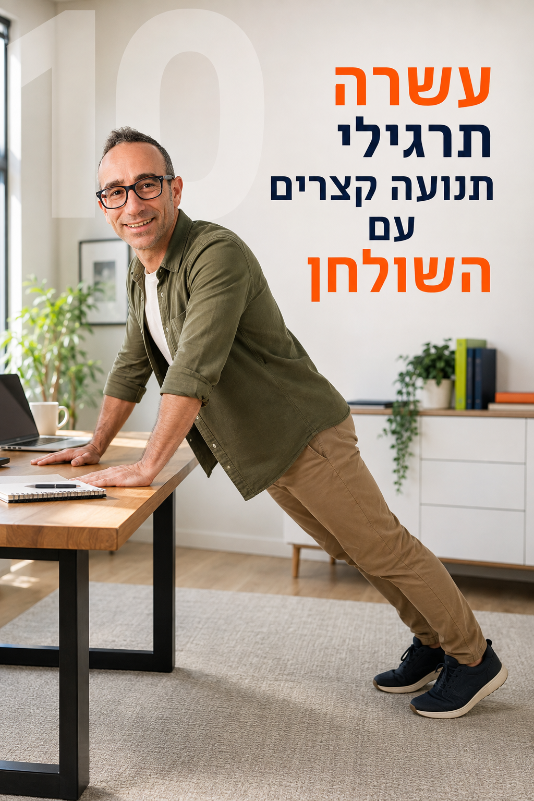
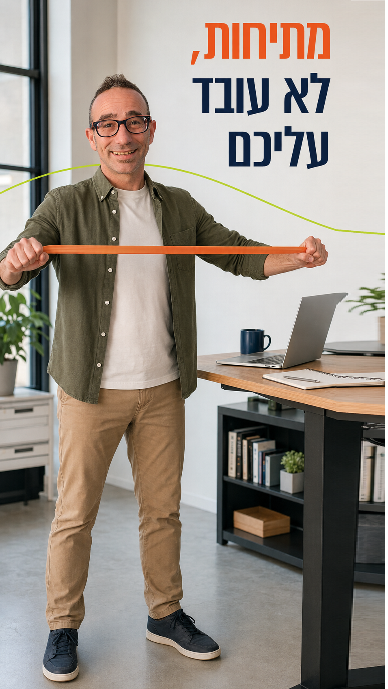
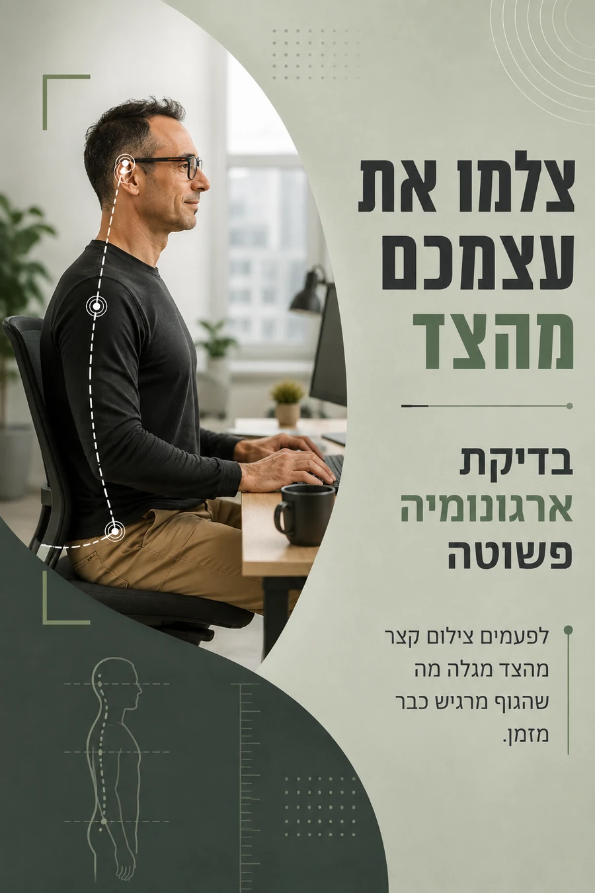
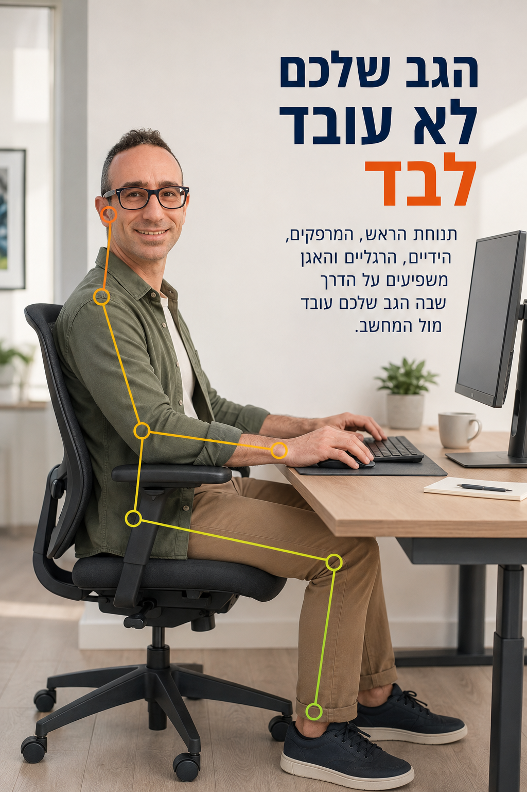
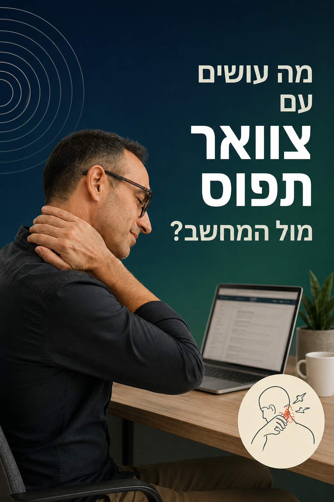
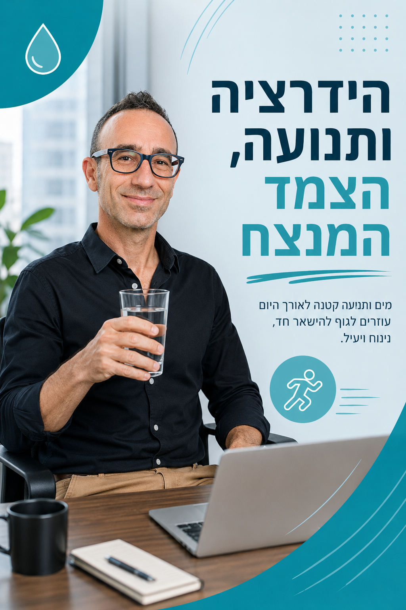

נענועי אגן קטנים ושינויי משקל שאפשר לעשות גם באמצע פגישה.
קוראים ואז קמים
כלים ותרגילים שיכניסו תנועה ליום שלכם
בלי להפוך אותו לאימון כושר
הרגלים בריאים לשבירת ישיבה ממושכת, להחזיר לגוף טווח תנועה וגמישות

נענועי אגן קטנים ושינויי משקל שאפשר לעשות גם באמצע פגישה.

הכיסא ככלי לתנועה: ברכיים, ירכיים, סיבוב, התארכות ושיווי משקל.
טקס סיום יום שמחזיר לגוף תנועות שכמעט נעלמו בזמן העבודה.
במקום להתחיל מכאב, בודקים אילו כיווני תנועה חסרו ומחזירים אותם.

תרגילים קצרים שאפשר לשלב ביום עבודה רגיל בלי בגדי ספורט.

שתי דקות אינן תחליף לאימון. הן פשוט פותרות בעיה אחרת.
תשומת לב, גיוון, דיוק, שיווי משקל והרגלים קטנים מול מחשב.

ארגונומיה שמאפשרת לשנות תנוחה במקום לקפוא בתנוחה אחת מושלמת.

בדיקת ארגונומיה פשוטה שמגלה מה באמת קורה בזמן העבודה.
איך לעבוד על לפטופ בלי להפוך בעצמכם למעמד מחשב.

העיניים, הידיים, הרגליים והאגן משפיעים גם על הדרך שבה הגב עובד.
מה הגוף צריך במהלך יום עבודה ואיך להכניס יותר שינוי.

שולחן עמידה טוב בעיקר כשהוא עוזר לעבור בין מצבים.

מה לבדוק בסביבה ובהרגלים לפני שמאשימים רק את הכיסא.
אין מספר קסם אחד. כך חושבים על הפסקות תנועה בצורה שימושית.

משתמשים במעברים שכבר קיימים ביום כדי להכניס יותר תנועה.
תרבות שמעודדת תנועה בלי להפוך Wellness לעוד משימה.
למה יוזמות תנועה נכשלות ואיך בונים פעילות שקל להשתתף בה.
רוצים את זה חי?
ההרצאה "זזים בעבודה!" הופכת את הרעיונות האלה לחוויה קצרה, מצחיקה ומעשית לצוות.